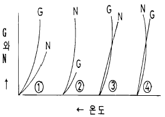
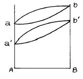
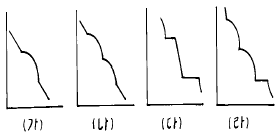
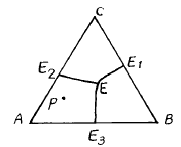
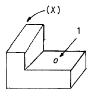

금속재료산업기사 (2002-09-08 기출문제)
1과목: 금속재료
1. 융점(약 232 ℃)이 낮고 녹기 쉬운 저융점 금속은?
- Zn
- Pb
- Sn
- Al
(정답률: 55%)

2. 금속재료의 비중(specific gravity)에 대한 설명이 잘못된 것은?
- 4℃의 물의 무게와 이와 똑같은 부피를 가진 물체의 무게와의 비를 말한다.
- 14℃의 물의 무게와 이와 똑같은 부피를 가진 물체의 무게와의 비를 말한다.
- 비중이 크다는 것은 그 만큼 무겁다는 뜻이다.
- 인장강도가 크다하여 비중도 같이 커지게 되면 무거운 재료가 된다
(정답률: 65%)
3. 결정성장 속도를 제어함으로써 결정립의 크기를 조절할수 있다. 핵 발생수(N)와 결정성장속도(G)로 표시할 경우 결정립의 크기(S)는 S=f(G/N)로 나타낼 수 있다. 그림 중 결정입자가 가장 미세하게 되는 것은?

- ①
- ②
- ③
- ④
(정답률: 59%)
4. 용융한 금속이 응고과정에서 나타나는 여러 가지 현상의 설명이 옳지 못한 것은?
- 냉각속도가 빠르면 결정핵의 수가 많아지므로 결정 입자는 미세해 진다.
- 냉각속도가 느리면 형성되는 핵의 수가 많아지며 결정 입자의 크기도 작아진다.
- 금형에 주입한 용융금속은 모래형에 주입한 것보다 급랭되므로 미세한 조직으로 되어 기계적 성질을 개선하는데 이용된다.
- 불순물이 함유된 금속에서는 수지상정의 가지가 되는 결정의 사이가 편석이 되어 수지상정이 나타난다.
(정답률: 69%)
5. 극저온용 구조재료로 사용되는 페라이트 철합금에 첨가되는 원소로 인성이 큰 동시에 저온취성을 방지할 수 있는 것은?
- Ni
- Co
- W
- Zn
(정답률: 59%)
6. 공구용 합금강에 요구되는 일반적인 특성이 잘못된 것은?
- 상온 및 고온에서 경도가 커야한다.
- 가열에 의한 경도의 변화가 적어야 한다.
- 경도와 내마멸성이 적어야 한다.
- 열처리성이 우수해야 한다.
(정답률: 90%)
7. Die casting 용으로 쓰이는 아연합금의 특성에 속하지 않는 것은?
- Al -유동성을 개선 한다.
- Cu -입간부식을 억제 한다.
- Mg -복잡한 형상주조에 좋다.
- Li -길이변화에 심한 영향을 준다.
(정답률: 45%)
8. 면심입방격자의 특징이 아닌 것은?
- 단위격자에서는 면대각선상에 3 개의 원자가 서로 접촉 하고 있다.
- 공간 중 원자가 함유하는 비율이 약 74% 이다.
- 배위수는 12 이다.
- 전성과 연성이 나쁘고 Cr, Mo, α 철 등이 이에 속한다.
(정답률: 68%)
9. 탄소강을 담금질하여 얻어진 조직의 경도 순서가 맞는 것은?
- 마텐자이트＞ 트루스타이트 ＞ 솔바이트 ＞오스테나이트
- 마텐자이트＞ 페라이트 ＞ 트루스타이트 ＞오스테나이트
- 오스테나이트＞ 솔바이트 ＞ 트루스타이트 ＞마텐자이트
- 오스테나이트＞ 트루스타이트 ＞ 솔바이트 ＞마텐자이트
(정답률: 77%)
10. 철강에 함유된 원소 중 5 대 성분에 속하지 않는 것은?
- C
- Si
- Mn
- Al
(정답률: 92%)
11. 1.6% 탄소강이 650℃에서 인장시험시 10배 이상 끓어지지 않고 늘어나는 특수한 현상은?
- 연성
- 전성
- 초탄성
- 초소성
(정답률: 34%)
12. 927℃이상의 고온에서 강도나 크리프 특성을 개선 시키기 위해 Fe, Ni 합금을 기지로한 고융점계 섬유강화초합금은?
- FTM
- FRS
- FCD
- FCC
(정답률: 48%)
13. 순철에 대한 설명 중 틀린 것은?
- 상온에서 페라이트 조직이다.
- 물리적성질은 각 변태점에서 불연속적으로 변화한다.
- 바닷물, 화학약품에 대한 내식성이 약하다.
- 높은 강도가 요구되는 재료의 사용에 아주 적당하다.
(정답률: 64%)
14. 상온(20℃)에서 마그네슘(Mg)의 비중은?
- 1.⑤
- 1.74
- 2.03
- 2.70
(정답률: 88%)
15. 50-90%Ni, 11-30%Cr, 0-25%Fe범위의 조성으로 된 합금으로써 전기저항열선으로 가장 많이 사용되는 내열합금은?
- Nichrome
- Albrac
- Kirksite
- Pt-Pt.Rh
(정답률: 100%)
16. 재결정 온도 이상에서 가공 하는 것은?
- 냉간가공
- 열간가공
- 상온가공
- 저온가공
(정답률: 87%)
17. 열처리가 어려운 재료로 탄소함량이 가장 적은 것은?
- 경강
- 고탄소강
- 순철
- 합금강
(정답률: 86%)
18. 마그네슘 합금이 아닌 것은?
- 다우메탈
- 미쉬메탈
- 퍼말로이
- 엘렉트론
(정답률: 48%)
19. 높이 1000 mm에서 낙하체를 시험편 위에 낙하시켰더니 반발하여 올라온 높이가 650 mm가 되었을 때 쇼어경도 값은?
- 50
- 100
- 150
- 200
(정답률: 43%)
20. 피복초경합금의 코팅재가 아닌 것은?
- TiC
- TiN
- Al2O3
- Cr2O3
(정답률: 39%)
2과목: 금속조직
21. 마텐자이트 변태의 특징이 아닌 것은?
- 원자의 협동에 의해 일어난다.
- 확산변태로 조성이 변한다.
- 상내에 격자결함이 존재한다.
- 변태에 수반하여 표면의 기복이 생긴다.
(정답률: 80%)
22. 격자점에서 원자가 빠진상태를 무엇이라고 하는가?
- 전위
- 쌍정
- 공격자점
- 점결함
(정답률: 55%)
23. 어떤 합금에서 규칙-불규칙 변태가 일어났는가를 조사하고자 할 때의 실험 중 가장 적당한 것은?
- 현미경 조직검사
- X-선 회절검사
- 시차열분석
- 투자율검사
(정답률: 50%)
24. 순수 금속의 강도를 증가시킬 수 있는 가장 적절한 방법은?
- 냉간가공
- 열간가공
- 석출경화
- 마텐자이트 변태
(정답률: 32%)
25. 그림과 같은 평형 상태도에서 고용체는 몇개인가?

- 1개
- 2개
- 3개
- 4개
(정답률: 69%)
26. 순철에는 몇 개의 동소변태가 있는가?
- 1
- 2
- 3
- 4
(정답률: 64%)
27. 냉간가공에 따른 금속재료의 성질 변화 중 옳지 못한 것은?
- 인장강도가 증가한다.
- 경도가 증가한다.
- 연신율이 감소한다.
- 인성이 증가한다.
(정답률: 46%)
28. 금속의 동소 또는 자기 변태점에서 일어나는 현상이 아닌것은?
- 자기적성질이 변한다.
- 결정구조가 변한다.
- 격자상수가 변한다.
- 함유하고 있는 원소량과 무게가 변한다.
(정답률: 79%)
29. 전하의 정전기적 인력에 의해 형성되는 화학적 결합은?
- 루스 붐
- 린스 도나비치
- 코트렐 에펙트
- 반데르 발스
(정답률: 70%)
30. 다음 중 고용체인 것은?
- Ledeburite
- Pearlite
- Cementite
- Austenite
(정답률: 44%)
31. 치환형고용체를 만들 때에는 두원자의 크기 차이가 얼마이어야 하는가?
- 15% 이하
- 30% 이하
- 45% 이하
- 50% 이상
(정답률: 64%)
32. 3성분계 완전공정형의 합금에서 가장 알맞는 냉각곡선은?

- (가)
- (나)
- (다)
- (라)
(정답률: 32%)
33. 결정의 구조에서 브라베 격자의 정계(晶系)에 속하지 않은 것은?
- 저심격자
- 편심격자
- 체심격자
- 면심격자
(정답률: 48%)
34. 3성분계의 순공정형 상태도의 액상면의 투영도에서 P 합금의 초정(初晶)은?

- A
- B
- C
- B + C
(정답률: 71%)
35. 결정경계에 있는 원자는 결정립 내에 있는 원자보다 어떻게 되는가?
- 결합에너지가 크므로 안정하다.
- 결합에너지가 크므로 불안정하다.
- 결합에너지가 적으므로 안정하다.
- 결합에너지가 적으므로 불안정하다.
(정답률: 48%)
36. 금속표면에 생긴 약 3000Å 이하의 두께를 갖는 산화물층은?
- 스케일(scale)
- 산화막(oxide film)
- 슬래그(slag)
- 부식(corrosion)
(정답률: 43%)
37. 상온의 순철을 설명한 것 중 관련이 가장 적은 것은?
- 체심입방격자이다.
- 담금질해도 경화되지 않는다.
- 귀속원자 수는 2개이다.
- A1변태를 하기 때문에 담금하면 경화된다.
(정답률: 45%)
38. 철강의 격자변태와 관련이 없는 변태점은?
- A4
- A3
- A2
- A1
(정답률: 48%)
39. 산소와 친화력이 가장 큰 원소는?
- Au
- Pt
- Zn
- Rh
(정답률: 35%)
40. 체심 입방격자에서 (110)면의 원자 밀도는? (단, 격자 상수는 a라 한다.)
- ( √2 )/a2
- ( √3 )/a2
- ( √1 )/a2
- ( √4 )/a2
(정답률: 30%)
3과목: 금속열처리
41. 강을 A1 이상 온도에서 냉각시 일어나는 확산 변태는?
- Austenite → Martensite
- β-Fe → δ-Fe
- Austenite → Fe3C 분리
- BCC → FCC
(정답률: 56%)
42. 피열처리재의 표면산화나 표면탈탄을 방지하기 위하여 프로판가스, 도시가스, 천연가스 등을 변성시킨 보호가스 속에서 열처리하는 로는?
- 용선로
- 중유로
- 전기로
- 분위기로
(정답률: 82%)
43. 건조한 수소는 강에 대하여 탈탄성은 거의 없으나 강한 탈탄성을 갖을 때 수증기 함량은?
- 0.01 ∼ 0.02
- 0.03 ∼ 0.⑤
- 0.⑤ ∼ 0.1
- 0.2 ∼ 0.3
(정답률: 15%)
44. 길이가 길거나 얇은 판재의 강 소재를 담금질할 경우 변형을 방지하기 위해 실시하는 냉각법으로 가장 적합한 것은?
- 분사 냉각법
- 염욕 냉각법
- 프레스 냉각법
- 강제 순환수 냉각법
(정답률: 48%)
45. 열처리 시편에서 평면의 냉각속도를 1 이라고 할 때 (X)장소(모서리)의 냉각속도는?

- 3
- 1/3
- 1
- 7
(정답률: 30%)
46. 화염 담금질된 강의 경도는 C(%)로 결정되는데 SM 35C의 담금질 경도는 얼마인가?
- HRC=35
- HRC=40
- HRC=45
- HRC=50
(정답률: 38%)
47. 노말라이징의 목적이 아닌 것은?
- 조대조직의 미세화
- 탄화물의 조대화
- 내부응력의 감소
- 불균질성 감소
(정답률: 77%)
48. 단조용 Al 합금 중 두랄루민계 합금의 열처리 특징으로 맞는 것은?
- 담금질 후 뜨임처리
- 담금질 후 상온시효처리
- 담금질이 없는 상온시효처리
- 담금질이 없는 인공시효처리
(정답률: 45%)
49. 염욕열처리에서 염을 관리하기 위하여 실시하는 시험방법은?
- 설퍼프린트 시험
- 강박 시험
- 조미니 시험
- 헐셀 시험
(정답률: 45%)
50. 강을 Ac3나 Acm선 이상의 온도에서 실시하는 열처리가 아닌 것은?
- 뜨임
- 담금질
- 완전풀림
- 노말라이징
(정답률: 43%)
51. 대형의 제품을 담금질하면 내,외부의 담금질 효과가 달라져 경도편차가 나타나는 현상은?
- 노치 효과
- 담금질 변형
- 질량 효과
- 가공경화 효과
(정답률: 48%)
52. 가단주철에 대한 설명으로 맞는 것은?
- 흑심가단주철은 백주철을 산화철과 함께 풀림로에 넣고 800-900℃에서 20-30시간 유지시켜 표면을 탈탄 시킨것이다.
- 흑심가단주철은 백주철을 담금처리하여 Fe3C를 분해 시켜 흑연을 편상으로 석출시킨 것이다.
- 흑심가단주철은 회주철을 풀림처리하여 Fe3C를 분해 시켜 흑연을 망상으로 석출시킨 것이다.
- 펄라이트가단주철은 흑심가단주철의 흑연화를 완전히 하지 않고 제1단계 흑연화가 끝난 뒤 800℃ 정도에서 일정시간 유지 후 급냉시킨 것이다.
(정답률: 25%)
53. 화염경화 열처리시 열원으로 쓰이지 않는 가스는?
- 프로판 가스
- 부탄 가스
- 산소-아세틸렌 가스
- 암모니아 가스
(정답률: 60%)
54. 0℃이하의 온도 즉 Sub-zero 온도에서 냉각시키는 심냉 처리의 목적은?
- 잔류 오스테나이트를 펄라이트화한다.
- 경화된강의 잔류오스테나이트를 마텐자이트화한다.
- 잔류 펄라이트를 시멘타이트화한다.
- 잔류 시멘타이트를 펄라이트화한다.
(정답률: 67%)
55. 진공 열처리의 특징을 설명한 것 중 맞는 것은?
- 정확한 온도 및 가열 분위기에 의해 고품질의 열처리가 가능하다.
- 노벽으로부터 방열, 노벽에 의한 에너지 손실이 많다.
- 노의 수명이 짧고 유지비가 저렴하다.
- 탈가스로 인한 공해가 심하다.
(정답률: 60%)
56. 주철의 주조응력을 제거하기 위한 풀림처리의 온도로 가장 적당한 것은?
- 100∼300℃
- 430∼ 600℃
- 650∼850℃
- 950∼1150℃
(정답률: 27%)
57. 고주파 담금질시에 일반적으로 가장 많이 쓰이는 냉각방법은?
- 수중냉각
- 분사냉각
- 가열냉각
- 노중냉각
(정답률: 65%)
58. 공구용 재료로서 구비해야 할 조건이 아닌 것은?
- 상온 및 고온 경도가 높을것
- 내마모성이 작을것
- 가열에 의한 경도 변화가 적을 것
- 내산화성, 내식성이 클것
(정답률: 48%)
59. 스테인리스강 용접품은 용접 후 열처리를 실시하여야 하는 이유가 아닌 것은?
- 용접금속 및 열영향을 받은 모재의 재질향상
- 용접잔류 응력의 완화
- 용접부의 내식성 회복
- 열영향부의 취성 향상
(정답률: 84%)
60. 열처리형 알루미늄 합금의 질별 기호 중 T6이 나타내는 의미는?
- 냉간 가공 후 자연 시효 처리 한다.
- 고온 가공 후 냉간 가공 처리 한다.
- 용체화 처리 후 인공 시효 처리 한다.
- 열간 가공 후 안정화 처리 한다.
(정답률: 58%)
4과목: 재료시험
61. 회전마모 시험기를 바르게 설명한 것은?
- Sutauki 타입의 대표적인 시험기이다.
- 두 개의 파이프 단면을 마찰시켜 마모량을 측정한다.
- 원판의 rpm을 다르게 회전시켜 Slip이 생기도록 한다.
- 피스턴 링과 실린더 사이의 마모에 대한 시험을 할수 있다.
(정답률: 48%)
62. 시험 전의 직경 14㎜, 시험 후 직경이 5㎜ 일때 단면 수축률(%)은?
- 약 21
- 약 45
- 약 63
- 약 87
(정답률: 25%)
63. 철강 중에 FeS 또는 MnS로 존재하는 S를 검출하기 위해 사용되는 검사법은?
- 형광검사법
- 열분석법
- 설퍼 프린트법
- 침투탐상법
(정답률: 80%)
64. 매우 작은 응력을 반복하여 작용시켰을 때 그 재료 전체 혹은 국부적으로 슬립변형이 생기며 이것이 시간과 더불어 점차적으로 발전해 가는 현상을 응력-반복회수로 알아보는 시험은?
- 인장시험
- 경도시험
- 피로시험
- 마모시험
(정답률: 65%)
65. 다음 경도시험 방법 중 맞는 것은?
- 압입자 이용 : 브리넬 경도
- 반발 이용 : 로크웰 경도
- 진자장치 이용 : 쇼어 경도
- 스크레치 이용 : 비커스 경도
(정답률: 48%)
66. 수직탐촉자를 사용하는 초음파탐상은 판재와 같이 평활한 부분의 두께를 통과하여 전파된다. 이러한 탐상의 측정에 가장 적합한 것은?
- 압연된 표면과 평행을 이루는 적층(라미네이션)형태의 결함
- 압연된 표면과 수직을 이루는 휨 방향의 결함
- 압연된 표면에 방사상으로 향한 방사상 결함
- 압연된 표면과 45° 각도를 이루는 형태의 결함
(정답률: 42%)
67. 스프링 시험에서 스프링에 작용하는 힘의 방향에 따른 종류가 아닌 것은?
- 압축 스프링
- 인장 스프링
- 전단 스프링
- 비틀림 스프링
(정답률: 29%)
68. 피로 시험에 관한 설명 중 옳지 않은 것은?
- 시험편이 작을수록 피로한도가 높다.
- 시험편에 구멍 등의 응력 집중 원인이 있으면 피로 한도는 낮아진다.
- 표면이 매끈할수록 파괴까지의 시간이 짧아진다.
- 일반적으로 온도가 올라가면 피로한도는 낮아진다.
(정답률: 45%)
69. 비파괴시험으로 탐상제 및 유화제의 취급상 안전과 화재 예방에 대한 특별한 관리가 필요한 것은?
- 침투탐상검사법
- 섬프검사법
- 마크로 검사법
- 와류탐상법
(정답률: 60%)
70. 로크웰 경도 F, B 및 G 스케일에 맞는 압자는?
- 직경 1/2 인치 강구
- 직경 1/4 인치 강구
- 직경 1/8 인치 강구
- 직경 1/16 인치 강구
(정답률: 40%)
71. 금속의 조직검사 방법 중 육안 또는 배율 10배 이하의 확대경으로 검사하는 것은?
- 비금속 개재물 검사
- 응력측정 시험
- 마크로 검사법
- 비틀림 시험
(정답률: 40%)
72. 조미니(Jominy) 시험은 무엇을 측정하기 위한 것인가?
- 부피
- 경화능
- 재료
- 피로한도
(정답률: 56%)
73. 완성된 대형제품의 경도를 측정하고자 한다. 어떤 경도기(HS)가 적당한가?
- 브리넬
- 로크웰
- 비커스
- 쇼어
(정답률: 58%)
74. 만능재료 시험기가 갖추어야 할 조건에 속하지 않는 것은?
- 시험기의 안전성이 있을 것
- 시험기의 내구성이 클 것
- 정밀도가 낮고 감도가 우수할 것
- 조작이 간편하고 정밀측정이 가능할 것
(정답률: 74%)
75. 금속재료의 결함이 어떤 중대한 손상, 파괴를 초래 하기 전에 검출이 가능하며 원자로 등에서 검출기를 피검체에 고정하여 놓으므로써 운전 및 가동 중 검사, 감시가 가능한 검사에 이용되는 것은?
- 음향방출 검사
- 와류탐상 검사
- 자분탐상 시험
- γ선 투과시험
(정답률: 24%)
76. 비파괴시험에 해당되는 것은?
- 피로 시험
- 크리프 시험
- 전단 시험
- 초음파탐상 시험
(정답률: 62%)
77. 금속 재료의 파면 검사에서 백점, 편석, 슬래그, 담금질 불균일 등의 검출에 사용하는 부식액으로 적당한 것은?
- 염산＋물
- 중탄산 나트륨
- 수증기＋알콜
- 암모니아수
(정답률: 25%)
78. 산업재해의 발생 원인 중 사람의 결함에 해당되는 것은?
- 환기
- 정비불량
- 소음
- 미숙련
(정답률: 75%)
79. 자분 탐상시험법으로 결함검출이 불가능한 것은?
- Fe
- Cu
- Ni
- Co
(정답률: 43%)
80. 전단시험시 응력이 작은 구간에서 전단 응력(τ)과 전단 변형(γ)과의 비례 관계식(τ=Gㆍγ) 중 G는?
- 압축률
- 강성률
- 마찰률
- 전단률
(정답률: 54%)